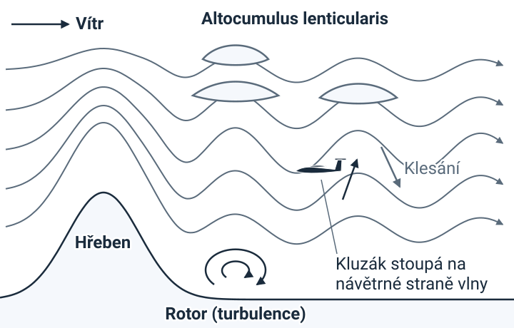
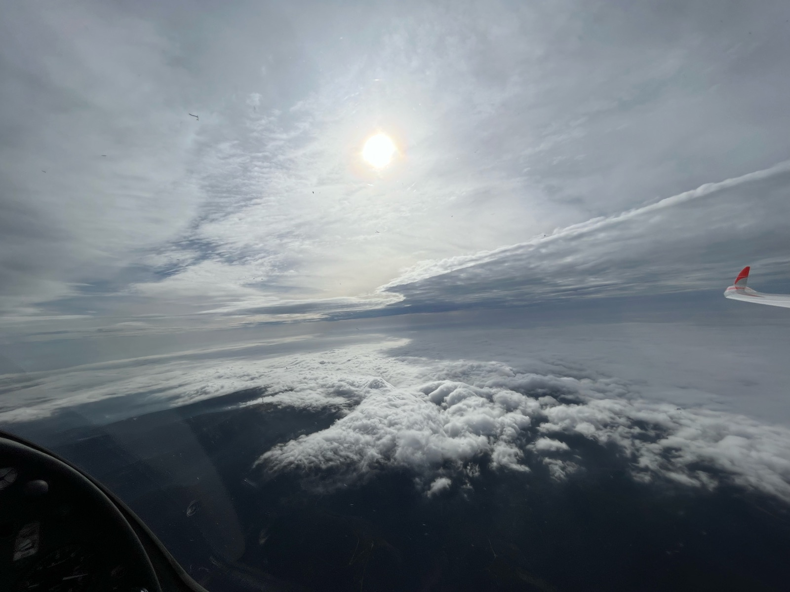
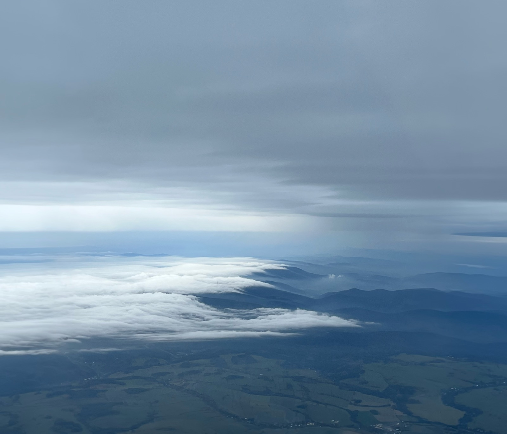

Vlnové létání
Vlnové létání je jedno z nejhezčích, pokud jde o výhledy. Kluzák klidně stoupá vysoko nad oblaky a pod ním je vidět celé pohoří. Zároveň ale vyžaduje znalosti a zkušenosti, protože se létá ve velkých výškách, v zimě a blízko turbulentního rotoru.
Princip
Když silný vítr přefoukne pohoří a nad ním leží stabilní vrstva vzduchu, začne vzduch za horami kmitat nahoru a dolů - podobně jako voda za kamenem v potoce. Vzniknou stojaté vlny, které se nepohybují s větrem, ale stojí na místě za hřebenem.
Ve stoupající části vlny může kluzák vystoupat i několik tisíc metrů. Vlnu často prozradí čočkovité oblaky, odborně altocumulus lenticularis, mezi piloty lentikuláry. Tvoří se na vrcholech vln a nehybně visí na obloze, i když kolem fouká silný vítr. Pod vlnou se ale skrývá rotor - pás silné turbulence, kterým je potřeba proletět.

Kde v Česku
Nejčastěji se ve vlně létá v Jeseníkách, kde se vlna tvoří hlavně při jihozápadním proudění. Létá se také za Krkonošemi a občas i v Krušných horách.
Mimo řízené prostory smí kluzák volně stoupat jen do letové hladiny FL 95, tedy přibližně do 2 900 m. Výš je řízený vzdušný prostor, a proto se pro vlnové létání vyhlašují zvláštní vlnové prostory, ve kterých se dá stoupat výrazně výš, například mezi Krkonošemi a Jeseníky až do FL 225, tedy zhruba 6 900 m. Takové prostory jsou výjimkou z běžných pravidel a vyhlašují se vždy jen na určitou sezónu.
Podmínky a sezóna
- Vítr
- silný, stálý a co nejvíc kolmo na pohoří.
- Sezóna
- hlavně podzim, zima a jaro.
- Výbava
- teplé oblečení, protože ve výšce je hluboko pod nulou, a kyslík. Podle předpisů EU má pilot nad tlakovou výškou 10 000 ft, tedy zhruba 3 000 m, dýchat kyslík vždy, když si není jistý, že mu jeho nedostatek neuškodí. Nedostatek kyslíku (hypoxie) je zrádný, protože si ho pilot sám nemusí všimnout.
- Pozor na
- rotor, rychle se zavírající oblačnost pod kluzákem a hranice vlnových prostorů.

Moje zkušenost
S vlnovým létáním zatím moc zkušeností nemám. Mám za sebou jen pár letů ve vlně v Jeseníkách.
